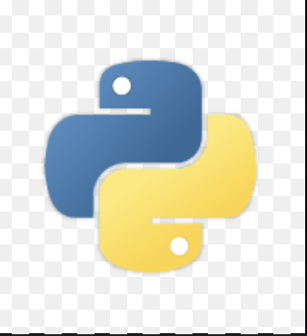

Leveraging LLMs in Law Firms
Developed and evaluated a prompt-engineered LLM pipeline capable of interrogating, summarizing, and deriving actionable insights from legal documents.
Focus was placed on prompt engineering techniques like ReAct, Tree-of-Thought, and Few-shot learning, benchmarked with GPT-4o, Claude-3, and Lawyer-LLaMA models.
Evaluated using BLEU, ROUGE, and accuracy metrics for quality and interpretability.
This project demonstrates the application of state-of-the-art NLP techniques in legal technology, aiming to enhance efficiency and understanding in legal casework and document processing.
Python(OpenAI,Bleu,transformers,Anthropic,huggingfacehub)
Fruit Recognition System
Built a CNN-based system to detect rotten vs fresh fruits and vegetables using color and texture features.
The model helps automate spoilage detection in retail grocery settings.
By integrating computer vision into food quality assurance, this project aimed to reduce human error and speed up shelf inspection in supermarkets.
Python (Keras, TensorFlow, Matplotlib)
Face Mask Detection with IoT
Implemented during COVID-19 to detect mask usage using a binary face classifier from camera feeds.
Deployed with ThingSpeak to send warnings for unmasked individuals in real-time.
This solution provided a scalable, contactless method of monitoring health compliance in public spaces and educational institutions.
Python (Keras, TensorFlow, ThingSpeak)
Autonomous Traffic Light System
Designed a microcontroller-based system that prioritizes traffic lights based on lane-wise density and emergency vehicles.
Reduced congestion and improved emergency vehicle handling using real-time logic from 8085 Assembly programming.
This embedded system project showed how digital logic can be applied to smart city applications with a focus on public safety and efficiency.
Obstacle Detection Robot with SLAM
Built an autonomous robot that maps unknown terrains using SLAM (Simultaneous Localization and Mapping).
Enabled navigation and environmental awareness using GMapping in ROS for geological exploration.
The robot demonstrated real-time perception and localization, making it suitable for environmental mapping and field research in uncharted areas.